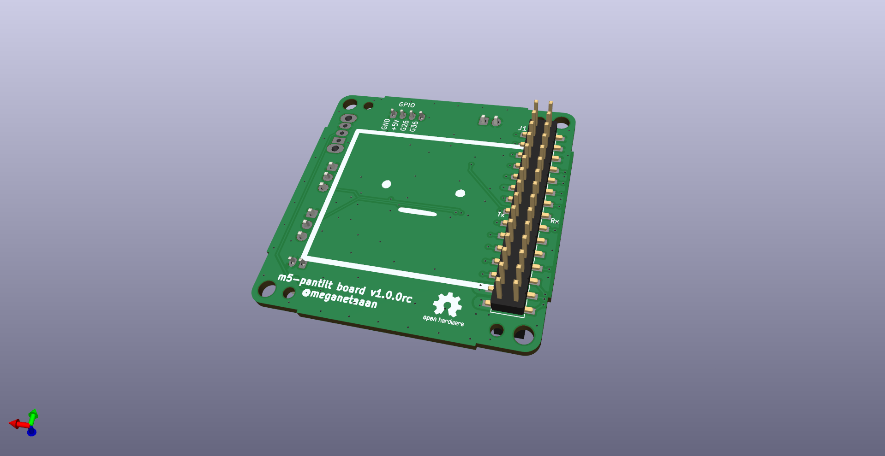
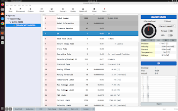
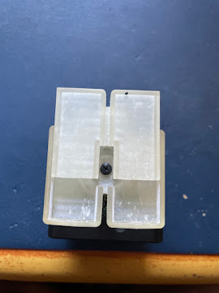
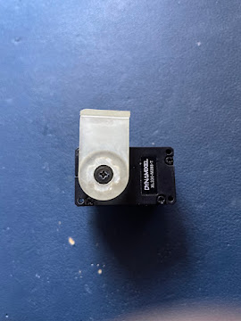
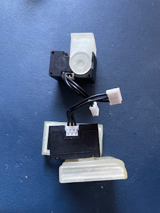
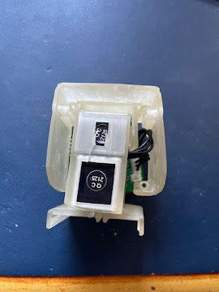
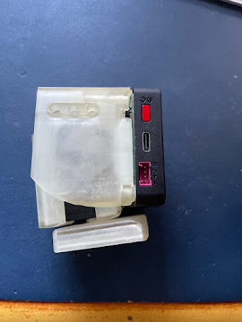
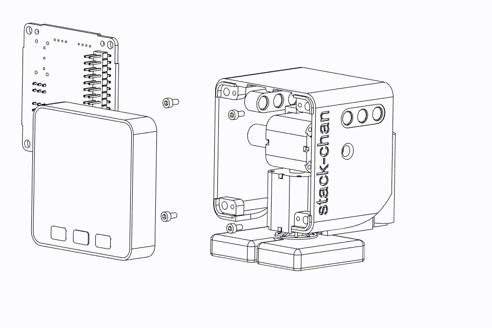
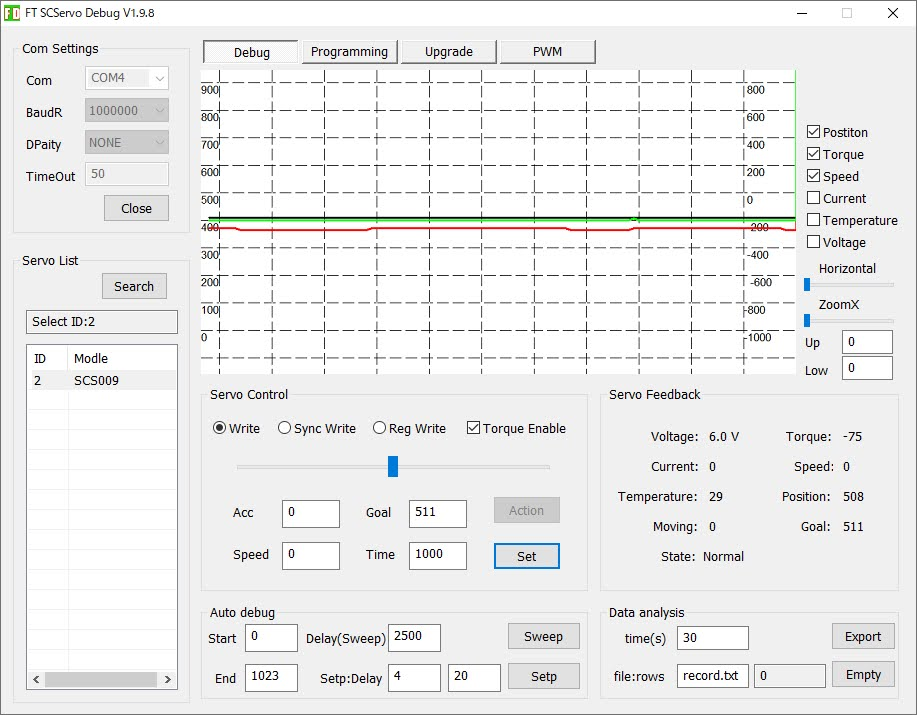
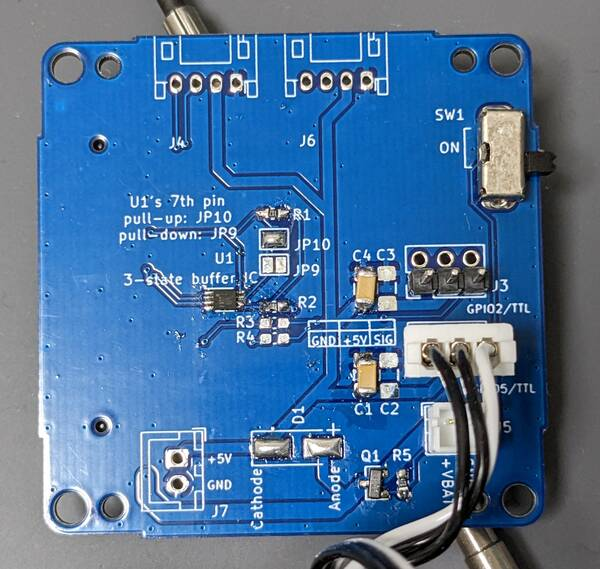

本文基于开源仓库 stack-chan/stack-chan（main 分支，固件 v1.1.0）与 M5Stack 官方 K151 产品文档（中文 / English）整理。 配套的图片、外壳 STL、KiCad 底板工程、离线固件包都已放在本目录（见附录 A 文件清单），可离线使用。
石川知也（meganetaaan）发起的开源"超可爱"桌面机器人：M5Stack 屏幕 + Avatar 表情库当脸，两个舵机做俯仰/偏航"脖子"，会点头、摇头、东张西望。硬件（外壳 STL、底板 KiCad 工程）和固件（Moddable SDK 上的 JavaScript/TypeScript，host + MOD 热装架构）全部开源。
| 路线 | 内容 | 难度 | 预算（估） | 工期 | 适合 |
|---|---|---|---|---|---|
| A. 整机 K151 | 淘宝/官方商城买整机，到手刷机即用 | ★ | ~¥700 上下（$99 / $125 + 运费） | 当天 | 只想玩、要 App/AI 功能 |
| B. v1.0 自制 | CoreS3 + XL330 串行舵机×2 + 官方底板（打样）+ 打印壳 | ★★★★ | ~¥600–900（含主机） | 1–2 个周末 | 完整手挫、要串行舵机的性能 |
| C. v0 自制 | Core/Basic（或 Core2）+ SG90×2 + 官方底板（打样）+ 打印壳 | ★★★ | ~¥300–500（含主机） | 1 个周末 | 经典造型、性价比高 |
| D. 丐版直插 | 已有 M5Stack + SG90×2 杜邦线直插端口（免底板免打板） | ★ | +¥30 即可（已有主机时） | 半天 | 快速验证兴趣 |
| E. 零元体验 | 网页模拟器 + 积木编辑器，不买任何硬件 | — | ¥0 | 10 分钟 | 纯体验/预研 |
路线 E 入口：https://stack-chan.github.io/stack-chan/web/ （支持简体中文，含模拟器、积木编辑器、MOD Gallery、刷机器）
| 商品 | 渠道 | 说明 |
|---|---|---|
| StackChan 整机（K151） | 淘宝官方店直链：https://item.taobao.com/item.htm?id=1042238294510 | 官方直营；K151 = CoreS3 + 机身（550mAh 电池、双反馈舵机、12×RGB、红外、三区触摸、NFC、双 USB-C） |
| StackChan 遥控套件版（K151-R） | M5Stack 官方淘宝店 https://m5stack.taobao.com 搜 "StackChan"；官方商城 https://shop.m5stack.com/products/m5stackchan-ai-desktop-robot-kit-with-remote-control-esp32-s3 | 多一个 JoyC + StickC-Plus 组装的手柄遥控（ESP-NOW 遥控），$125 |
| M5Stack CoreS3 | 官方淘宝店 https://m5stack.taobao.com （搜 CoreS3）；官方商城 https://shop.m5stack.com/products/m5stack-cores3-esp32s3-iotdevelopment-kit | 路线 B 的主机，约两百多 |
| M5Stack Core2 / Core Basic/Gray | 同上（官方淘宝店或商城） | 路线 C/D 的主机；Core2 有内置喇叭和电池 |
| 中文文档 | https://docs.m5stack.com/zh_CN/StackChan | 购买前后都可看 |
官方商城（Shopify）从深圳发货，支持国际卡；淘宝店对国内用户最方便、可开发票。M5Stack 是深圳公司，国内现货充足。 注意：自己买 CoreS3 做"脸+脖子"属于自制路线；StackChan World App 只认官方核心（见第 0 节第 7 条）。
| 舵机 | 类型 | 参考角（正前） | 国内渠道 | 特点 |
|---|---|---|---|---|
| SG90 / MG90S | PWM | 90° | 淘宝任意（¥5–15/个，MG90S 金属齿更耐用） | 便宜；涌流可能拉掉主机电源，堵转会过热冒烟（官方警告），不能读角度/断扭矩 |
| SCS0009 | 串行 TTL | 100° | 深圳飞特（Feetech）产品，淘宝可直购 | 串行、可读角度；改 ID 需要 URT-1 调试器或手工工具 |
| XL330-M288（v1.0 新规格） | Dynamixel 串行 | 设 ID1=腿/ID2=脖，波特率 1M（默认 57600 需改） | Robotis 韩国品牌，淘宝有代理店；U2D2 调试器约 ¥200–300 | 功能最强（速度/扭矩/温度反馈）；v1.0 外壳官方配套 |
| RS30X/RS304MD | 串行 TTL | 0° | 日本 Vstone/Best Solution，国内需代购/转运（约 3000 日元+） | 官方文档认可，但国内获取成本高，不推荐 |
给国内手挫的建议：走丐版/性价比选 SG90（MG90S 更稳）；要体验串行舵机玩法选 SCS0009（本土品牌好买）或 XL330（走 v1.0 官方新规格）。
| 物料 | 规格 | 国内获取 |
|---|---|---|
| 锂电池 | 3.7V 400–640mAh（如 401230/501235）带 PH2.0-2P 插头 | 淘宝 ¥10–20 |
| 螺丝 | M2×4 自攻×4、M2×8 自攻×2；可选 M3×15×2；XL330 自带 M2.5×6 | 淘宝螺丝包 |
| 杜邦线 | 母对母/公对母若干 | 丐版直插必备 |
| PH2.0 端子线 | 2P 若干 | 接底板电池座 |
| 3D 打印 | PLA/PETG 约 30–50g | 自印或代打（见第 5 章） |
| 路线 | 主要开销 | 合计 |
|---|---|---|
| D 丐版（已有主机） | SG90×2 + 杜邦线 | 约 ¥30 |
| C v0 自制（含主机） | Core Basic/Core2 + SG90×2 + 打样 + 打印 + 电池 | 约 ¥300–500 |
| B v1.0 自制（含主机） | CoreS3 + XL330×2 + U2D2（一次性投入）+ 打样 + 打印 | 约 ¥600–900 |
| A 整机 K151 | 淘宝整机 | 约 ¥700 上下 |
官方开源底板 m5-pantilt（KiCad 工程）位于仓库 schematics/m5-pantilt/，功能：


PWM 版（SG90）与串行版（SCS0009/RS30X/Dynamixel）的器件差别（跳线、缓冲 IC 等）详见实拍图与原理图：
| PWM 版 | 串行版 |
|---|---|
 |
 |
 |
 |
官方对比结论（原文翻译）：PWM/SG90 便宜但涌流可能导致 M5Stack 掉电，堵转过限可能冒烟；串行舵机能读角度、限速控制更精细，但贵。板上信号/供电见原理图 [images/m5-pantilt-sch.png] 与完整原理图 PDF（本包
pcb/m5-pantilt-v1.0/m5-pantilt.pdf）。
pcb/m5-pantilt-v1.0/
├── m5-pantilt.kicad_pro / .kicad_sch / .kicad_pcb ← KiCad 工程（main 分支 = v1.0 规格）
├── m5-pantilt.pdf ← 原理图 PDF（核对元件用）
├── m5-pantilt-all-pos.csv ← 贴片坐标（CPL），仓库官方提供
├── m5-pantilt.kibot.yaml ← KiBot 一键生成嘉立创制造文件的配置
├── gerber/ ← 仓库只提交了丝印 + 钻孔
│ ├── m5-pantilt-B_Silkscreen.gbo
│ ├── m5-pantilt-F_Silkscreen.gto
│ ├── m5-pantilt-NPTH.drl / m5-pantilt-PTH.drl
├── m5-pantilt.pretty/ ← 自定义封装库
└── 其他工程配套文件（lib/sym-lib-table/cache 等）
重要：铜层 Gerber 官方没有提交（.gitignore 只忽略 generated/），需要自己生成——这正是"自己打"的第一步。
方法 A：KiBot 一键生成（推荐，配置官方已写好）
bash
pip install kibotpcb/m5-pantilt-v1.0/ 目录执行：
bash
kibot -c m5-pantilt.kibot.yaml -e m5-pantilt.kicad_sch -b m5-pantilt.kicad_pcbgenerated/ 下，其中 Manufacturers/JLCPCB/ 是给嘉立创的 Gerber/BOM/坐标文件，另有 BoM/Generic/ 的通用 BOM（HTML/XLSX）。方法 B：KiCad 手动导出（不装 KiBot）
m5-pantilt.kicad_pcb → 文件 → 制造输出 → Gerbers（导出含铜层+丝印+阻焊+钻孔，打包 zip）。m5-pantilt-all-pos.csv。m5-pantilt.pdf 手抄，见 4.4）。仓库贴片坐标文件（CPL）里只有 3 个 SMD 件，其余都是手插件——所以这块板非常适合手挫：
| 位号 | 值/型号 | 封装 | 面别 | 说明 |
|---|---|---|---|---|
| J1 | 2×15 排母（Conn_02x15） | SMD 立贴 | bottom（背面） | M5Stack 从上面插下去的插座 |
| R1 | 1kΩ | 0603（手焊盘） | top | — |
| R2 | 100Ω | 0603（手焊盘） | top | — |
手插件（对照原理图 PDF 与实拍图核对）：舵机 3P 连接座 ×2、PH2.0-2P 电池座、跳线帽/排针、（串行版）NL27WZ125 电平缓冲（SOT-23）、2SA1015（SOT-23）、可选拨动开关。
BOM 官方页面标注"建设中"，下单前务必用
m5-pantilt.pdf或 KiCad 原理图核对一遍，缺件补件。
玩法 1：只打裸板，全部手焊（最省钱，元件少到 15 分钟焊完）
images/m5-pantilt-bottom.png）。玩法 2：让嘉立创 SMT 贴片（省焊接）
m5-pantilt-all-pos.csv 或方法 A 生成的 JLC 格式坐标）。打样完成后：万用表蜂鸣档查 5V/GND 是否短路，再上 M5Stack 试机。
官方固件文档明确给出了直插引脚（manifest_local.json 配置 driver.type: "pwm"）：
| 主机 | 端口 | pan（水平）引脚 | tilt（垂直）引脚 |
|---|---|---|---|
| M5Stack Core2 | Port.A | GPIO 33 | GPIO 32 |
| M5Stack Core2 | Port.C | GPIO 13 | GPIO 14 |
| M5Stack Core Basic/Gray | Port.C | GPIO 16 | GPIO 17 |
接线：每颗 SG90 三根线——信号（橙）接上表引脚、VCC（红）接 5V、GND（棕）接 GND。舵机吃电流，建议外接 5V（USB 充电器 + 杜邦线分压）并共地，否则 SG90 启动瞬间可能把主机拉掉电。
也可参考 mongonta 的 M5Bottom 方案（M5GO Bottom 底座 + SG90，免自制板）：装配图见
images/m5go_assembly01.jpg~m5go_assembly11.jpg。
v0 外壳（Core/Basic + SG90/SCS0009/RS30X）对应的老板图纸在仓库 tag v0.2.1：
https://github.com/stack-chan/stack-chan/tree/v0.2.1/schematics
（main 分支上的是 v1.0 板，配 CoreS3 + XL330 + v1.0 外壳；两版不通用，按你选的外壳规格拿图纸。）
| 路线 | 目录 | 文件 |
|---|---|---|
| v1.0（XL330 + CoreS3） | stl/v1-xl330/ |
shell、feet_top、feet_bottom、bracket_XL330_f、bracket_XL330_b、gear_XL330（×2 颗）、gear_XL330_narrow（孔紧时的备选）、horn |
| v0（SG90 + Core/Basic） | stl/v0-sg90/ |
shell_SG90、feet_SG90、bracket_SG90_f、bracket_SG90_b、backpack_400mah（电池背包） |
| K151 官方机身（魔改参考） | stl/k151-body/ |
MainBody、Base、BaseCover、ServoBody、ServoArm、ServoCover、ServoSideCover、BearingFixture、LightGuideBar-A/B |
（STEP 可编辑源文件在仓库 case/ 各目录，想改造型用 Fusion 360 / FreeCAD 打开。）

gear_XL330 的孔公差按 3D 打印精度放大过：装上去晃就用 gear_XL330_narrow。| 舵机 | 可动范围 | 参考角 |
|---|---|---|
| SG90 | 0–180° | 90° |
| SCS0009 | 0–200° | 100° |
| RS30X | −150~150° | 0° |
| XL330 | — | 改好 ID 后以正前方装 gear |
先做舵机参数设置（需要 U2D2 + SMPS2Dynamixel + 5V 电源 + Dynamixel Wizard 2）：

成品长这样（正/侧）：
| 正面 | 侧面 |
|---|---|
 |
 |
装配步骤（对应官方图 dynamixel_01 ~ dynamixel_10）：








插上 M5Stack（CoreS3），完成：

官方装配动图（GIF，用看图工具打开）：
| 1. 两颗舵机卡进 bracket + 电池入 backpack | 2. feet 与 shell 锁螺丝 | 3. 舵机/电池接底板 + 装 M5Stack |
|---|---|---|
 |
 |
 |
文字版流程：

mongonta（M5GO Bottom 版）的静态装配图：
images/m5go_assembly01.jpg~images/m5go_assembly11.jpg，带壳+底座+装饰件（猫耳、河马耳、LEGO 孔）的玩法。


| 方式 | 门槛 | 适合 |
|---|---|---|
| 网页刷机（WebSerial） | 零环境 | 99% 的人，首选 |
| 离线 zip + esptool | 低 | 网页工具抽风/想脚本化 |
| npm 本地构建 | 中 | 要改代码、要 MOD 开发 |
| M5Burner | 低 | K151 出厂固件的安装/恢复 |
网页工具全家桶（简体中文界面）：刷机 / BLE 设置 Wi-Fi / MOD Gallery / 积木编辑器 / 表情编辑器 / WASM 模拟器 / MediaPipe BLE 跟踪 https://stack-chan.github.io/stack-chan/web/ 开发预览版在 https://stack-chan.github.io/stack-chan/develop/web/ （一般用户用上面的稳定版）
firmware/stack-chan-firmware-v1.1.0.zip（已通过官方 SHA-256 校验）内含 4 个目标：
| 目标 | 适配 |
|---|---|
m5stackchan_cores3 |
K151 整机 |
com.m5stack.cores3 |
CoreS3 裸机 |
com.m5stack.core2 |
Core2 |
com.m5stack |
Core Basic/Gray |
（Stack-chan RT 与 Takao Core2+SG90 需从源码构建，不含在包内。）
每个目标文件夹是 esptool 三件套：bootloader.bin / partition-table.bin / xs_esp32.bin。安装 esptool（pip install esptool）后按 ESP-IDF 标准布局写入（S3：bootloader@0x0、partition-table@0x8000、app@0x10000；ESP32：bootloader@0x1000）：
esptool --chip esp32s3 --port /dev/ttyACM0 --baud 921600 \
write_flash 0x0 bootloader.bin 0x8000 partition-table.bin 0x10000 xs_esp32.bin
偏移如有出入，以网页刷机或 npm 路线为准（它们会自动处理）。刷机会清空机身设置与已装 MOD（官方 v1.1.0 说明）。
官方在 Ubuntu 24.04 + Node 22 上实测（Windows 可用 WSL）：
git clone https://github.com/stack-chan/stack-chan.git
cd stack-chan/firmware
npm i
npm run setup # 自动装 Moddable SDK + ESP-IDF（基于 xs-dev）
npm run setup -- --device=esp32
npm run doctor # 自检：能看到 esp32 目标即成功
npm run flash # 标准机 M5StackChan CoreS3
其他硬件目标（子平台已预置驱动类型和引脚，不要自己加 --target）：
| 板子 | 构建烧录 | 驱动 |
|---|---|---|
| M5StackChan CoreS3（K151） | npm run flash |
m5stackchan（串行 TX6/RX7） |
| Stack-chan RT | npm run flash:stackchan_rt |
dynamixel（TX7/RX6） |
| Takao Core2 + SG90 | npm run flash:takao_core2_sg90 |
pwm（pan 19 / tilt 27） |
还有 npm run build / deploy / debug / debug:xsdb 各目标的同名变体；不需要 sudo。
编辑 stack-chan/firmware/host/app/manifest_local.json（仓库里就是留白的本地配置文件）：
{
"include": ["./manifest.json"],
"config": {
"driver": {
"type": "pwm",
"pwmPan": 33,
"pwmTilt": 32
}
}
}
| 配置项 | 可选值 | 说明 |
|---|---|---|
driver.type |
m5stackchan / scservo / rs30x / pwm / dynamixel / none |
舵机驱动类型 |
driver.panId / tiltId |
1–254 | 串行舵机 ID（pan=水平/腿，tilt=垂直/脖子） |
driver.offsetPan / offsetTilt |
−90~90 | 机械零位微调 |
tts.type |
local / voicevox / voicevox-web / elevenlabs / openai / remote |
语音合成 |
tts.host / tts.port / tts.volume |
— | TTS 服务器与音量 |
验收标准（官方原文）：装好后按 A 键每 5 秒随机看向一处、B 键依次看向左右上下、C 键表情反色。会左右摇头 = 驱动配置成功。
host 只刷一次，之后秒级换"应用"：
npm run mod -- ./mods/examples/look_around/manifest.json
# 多设备时指定串口：
npm run mod -- ./mods/examples/look_around/manifest.json --port /dev/ttyACM1
不想写代码用网页积木编辑器；想擦掉 MOD 回默认行为用 npm run erase-flash（注意会清整个 flash，含设置）。
出厂固件恢复/更新（M5Burner）：
StackChan World App（视频查看、远程化身控制、App Center 等）：
出厂固件生态源码（全开源）：https://github.com/m5stack/StackChan
npm run mod -- look_around 试装一个 MOD。mods/examples/chatgpt）、Codex Voice、XiaoZhi v1 兼容 ChatService（Opus 语音）、OpenAI Realtime 直连。mcp.token Bearer 认证）。mods/examples/mediapipe_ble + 网页工具 https://stack-chan.github.io/stack-chan/web/mediapipe/ ）。tts.type 一行配置。firmware/mods/examples/（look_around、face_tracker、mimic_follow、lip_sync、web_radio、monologue、cheerup 等）。mcconfig/mcrun/mcpack，用仓库 npm 脚本（会管理 dist/ 输出目录）。stackchan-diy-kit/
├── StackChan手挫完全指南.md ← 本文档
├── images/ ← 45 张官方装配图/动图/板子实拍（正文已引用）
├── stl/
│ ├── v1-xl330/ （8 件：v1.0 外壳全家桶）
│ ├── v0-sg90/ （5 件：v0 SG90 外壳 + 电池背包）
│ └── k151-body/ （10 件：K151 官方机身结构，魔改参考）
├── pcb/
│ └── m5-pantilt-v1.0/ （KiCad 完整工程 + 原理图 PDF + 贴片坐标 CSV + kibot 配置 + 丝印/钻孔）
└── firmware/
├── stack-chan-firmware-v1.1.0.zip （官方预编译固件，4 目标 ×3 件，SHA-256 已验）
└── stack-chan-firmware-v1.1.0.zip.sha256
开源项目
购物
文档
firmware/docs/）：getting-started / flashing-firmware / api / mods祝手挫顺利。装配口诀：先刷固件、对准零位、再锁螺丝。